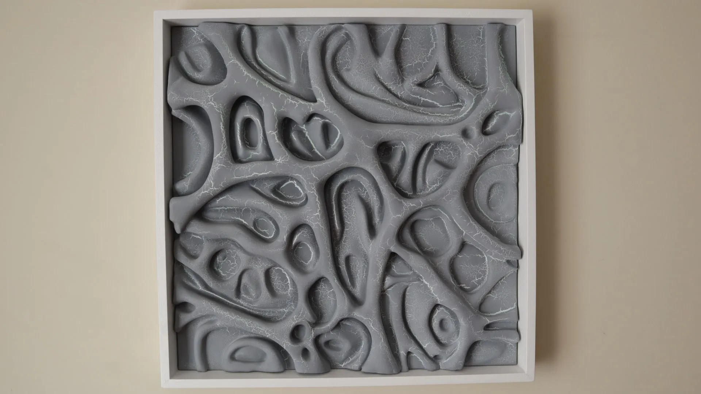
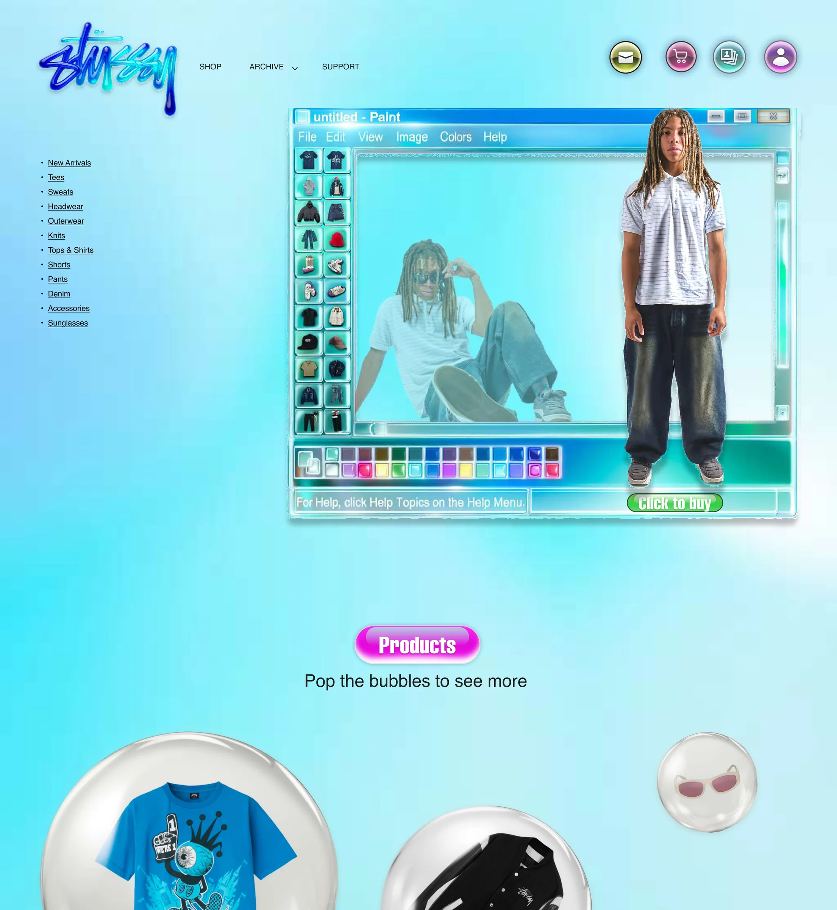
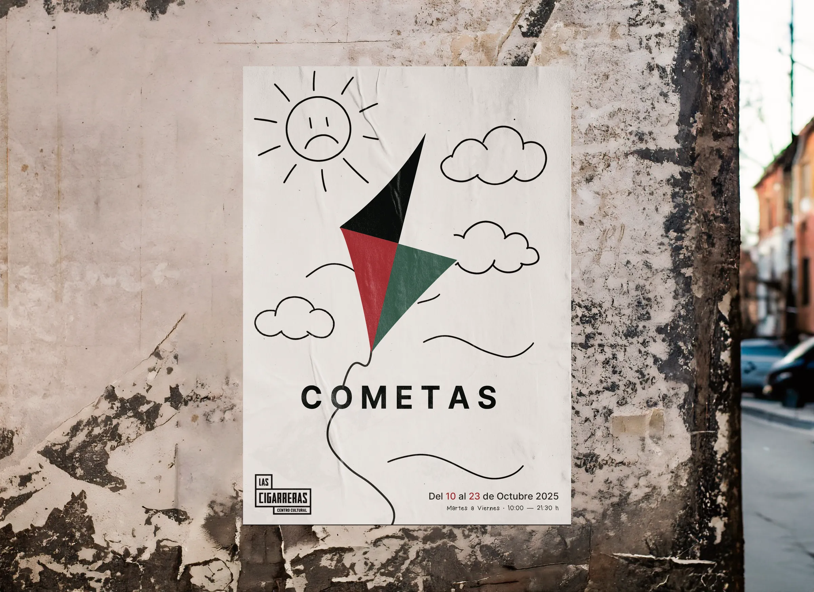
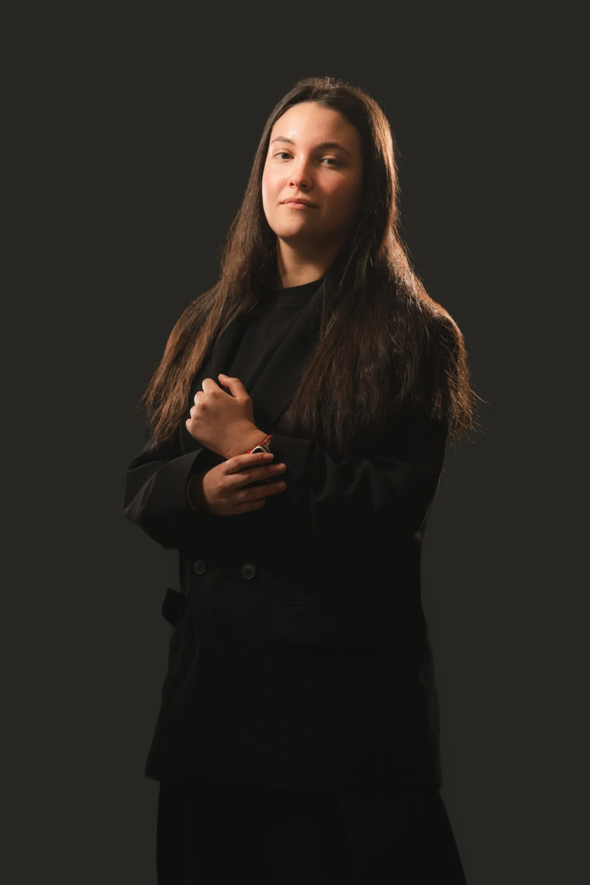

Hello, I am Belén Pérez, graphic designer

I am Belén Pérez, a graphic designer in Orihuela, Spain. I make brand identities, editorial pieces and social media content.
Looking for an internship in Alicante or Murcia, 2026/27
See workWork
- Losie TattooSocial, photo and videoExperience2026
- Dima SmolaIdentityReal client2026
- MetropoliEditorialAcademic2025
- Peluquería MayteIdentity and packagingReal client
- Stüssy AeroWebSpeculative2025/26
- Stüssy GrungeWebSpeculative2025/26
- WayfindingPictogramsAcademic
- CometasPoster and identityAcademic2025
Experience · January to May 2026
Losie Tattoo
Five months running the communication of a tattoo studio in Murcia, from the Instagram feed to the shop window.
- Feed design, templates and social media campaigns, with a content calendar.
- Photography of the finished work, filming and editing reels.
- Posters, flyers, cards, catalogues and flash books.
- Merchandise and signage, with window vinyls and in-store posters.
- Mockups showing how the tattoo looks on the client’s body.
- Websites for the group’s three brands.
Tap a month or a post. These are the 41 posts on the profile from January to May 2026.
Posts by @losietattoomurcia. The tattoos are by the studio’s artists.

Dima Smola
Identity for a sculptor whose surfaces change with the light.
More details
Metropoli
Design trends magazine: masthead, contents page and inside spreads.
More details
Peluquería Mayte
Monogram, stationery and packaging for a neighbourhood hair salon.
More details
Stüssy Aero
Speculative Stüssy online store in the Frutiger Aero style of the 2000s.
More details
Stüssy Grunge
The same store turned into a torn-paper fanzine in red and black.
More details
Wayfinding
Pictograms for classrooms, services and common areas, applied on site.
More details
Cometas
Poster and identity for an exhibition proposal at Las Cigarreras, Alicante.
More details
About
I am in my fourth year of Graphic Design at EASDO in Orihuela, and I have already worked in a studio handling the identity, social media and video of a real brand.
I also do fine line tattoos. It taught me to sketch a lot before drawing, because a line on skin cannot be erased.
Education
- Degree in Graphic DesignEASDO, Orihuela · 2023 – now, 4th year
- Arts BaccalaureateIES El Palmeral, Orihuela · 2022 – 2023
Experience
- Graphic designer and community managerLosie Tattoo, Murcia · Jan – May 2026
- Social media, marketing and websitesAcademy Giant, Giant Experience and El Artesano a Mano · summer 2022
Tools
- Illustrator, InDesign, Photoshop
- Figma, Procreate
- Firefly, Midjourney, Runway
- Blender and Fusion 360 (basic)
Languages
- Spanish and Valencian, native
- English B2 Cambridge, preparing C1
- French A2
Looking forCurricular and extracurricular internships, 2026/27, in Alicante and Murcia.